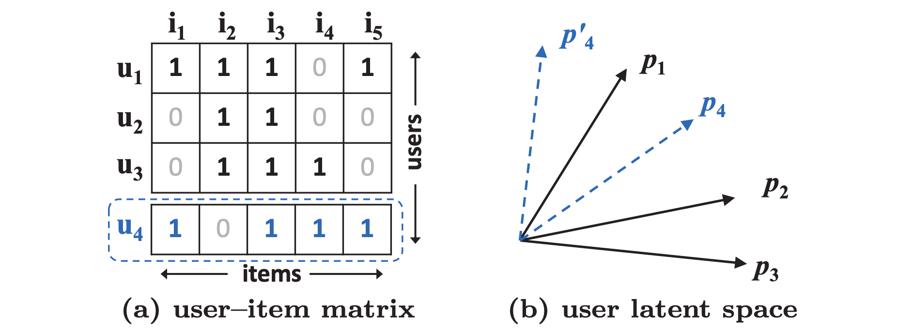

Matrix Factorization#
NeuMF 논문에서의 Matrix Factorization#
2.Preliminaries > 2.2 Matrix Factorization 부분
MF는 유저와 아이템을 latent feature의 실수 벡터와 연관짓는다. \(\mathbf{p}_u\)와 \(\mathbf{q}_i\)가 유저 \(u\)와 아이템 \(i\)를 나타낸다고 해보자. MF는 \(\mathbf{p}_u\)와 \(\mathbf{q}_i\)를 내적하여 상호작용 를 계산한다.
\(K\)는 latent space의 차원을 나타낸다. MF는 잠재 공간의 각 차원이 서로 독립적이고 동일한 가중치로 선형 결합한다고 가정하여 유저 및 아이템 잠재 요인(latent factor)의 양방향 상호 작용을 모델링한다. 그렇기 때문에 MF는 잠재 요인의 선형 모델로 여겨진다.

Figure 1
Figure 1은 내적이 어떻게 MF의 표현력을 제안할 수 있는지를 보여준다. 이 예시를 이해하기 위해 우선적으로 두 가지만 얘기하고 넘어가자. 첫 번째, MF는 유저와 아이템을 같은 잠재 공간(latent space)로 매핑하기 때문에 두 유저간의 유사도 또한 내적(같은 방법으로 잠재벡터 사이의 코사인 각도)으로 계산될 수 있다. 두 번째로, 일반화 손실 없이, 우리는 MF가 복구해야 하는 두 유저의 실제 유사도로서 자카드 계수를 사용한다.
Figure 1a의 상위 3개의 row를 보자. \(s_{23}(0.66) > s_{12}(0.5) > s_{13}(0.4)\)를 계산하기는 쉽다. 그렇게 해서, 잠재 공간에서의 \(\mathbf{p}_1\)과 \(\mathbf{p}_2\), 그리고 \(\mathbf{p}_2\)의 기하학적 관계는 Figure 1b처럼 그릴 수 있다. 자 이제 새로운 유저 \(u_4\)를 고려해보자. \(s_{41}(0.6) > s_{43}(0.4) > s_{42}(0.2)\)로 계산되는데, 이는 \(u_4\)가 \(u_1\)과 가장 유사하고, 그 다음으로 \(u_3\)와, 그 다음으로 \(u_2\) 순으로 유사하다는 뜻이다. 그러나, 만약 MF 모델이 \(\mathbf{p}_4\)를 \(\mathbf{p}_1\)에 가장 가깝게 놓는다면 \(\mathbf{p}_4\)가 \(\mathbf{p}_3\)보다 \(\mathbf{p}_2\)에 더 가까워지게 되어 큰 랭킹 손실이 생길 것이다.
위 예시는 MF가 복잡한 유저-아이템 상호작용을 저차원의 잠재 공간에서 간단하고 고정적인 내적으로 계산하려 할 때 발생할 수 있는 한계를 보여준다. 한 가지 해결 방법은 \(K\)를 늘리는 것이다. 그러나 이는 sparse한 상황에서는 역으로 모델의 일반화 성능을 저하시킬 수 있다(e.g., 오버피팅). 본 논문에서는 Deep Neural Network를 이용하여 상호작용 함수를 학습시킴으로써 이러한 한계를 다룬다.